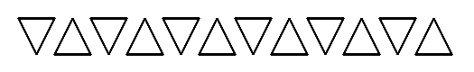
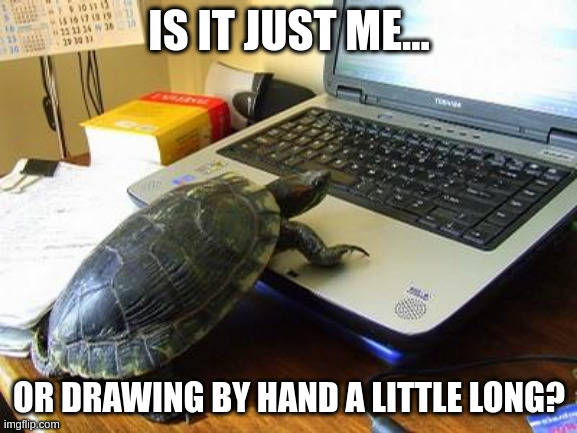

Challenge #436
Tortuga
On vous propose une séance de dessin !
Le fichier tortuga-flag.txt contient le flag dessiné uniquement à l’aide de
segments.
La méthode pour encoder ces segments est simpliste. On fixe un point de départ
P(x, y)
initialisé à un point quelconque dans le plan, par exemple (0, 0). Puis,
chaque
élément (dx, dy) dans la liste L fournie dans le fichier tortuga.txt permet
d’atteindre un nouveau point Q(x + dx, y + dy) et le segment
PQ est tracé
entre ces
deux points. Une fois ce segment tracé, le point courant P est remplacé par
le point
Q, et ce procédé est itéré sur tous les éléments de la liste.
Afin d’autoriser plusieurs symboles, la valeur spéciale (0, 0) pour
(dx, dy) est
utilisée pour déplacer le point P comme décrit ci-dessus avec l’élément
suivant de la
liste, mais aucun segment n’est tracé.
On donne l’exemple suivant (tortuga-example.txt) où le point initial
P est choisi
tout en haut à gauche.
[
# Draw triangle pointing down (drawn clockwise)
(2, 0), (-1, 2), (-1, -2),
# Skip
(0, 0), (3, 0),
# Draw triangle pointing up (drawn counterclockwise)
(-1, 2), (2, 0), (-1, -2),
# Skip
(0, 0), (1, 0),
] * 6

Note : le flag est de la forme
FCSC{[0-9]+}.

Fichiers à étudier
- tortuga-flag.txt
- tortuga-example.txt
- tortuga-example.png